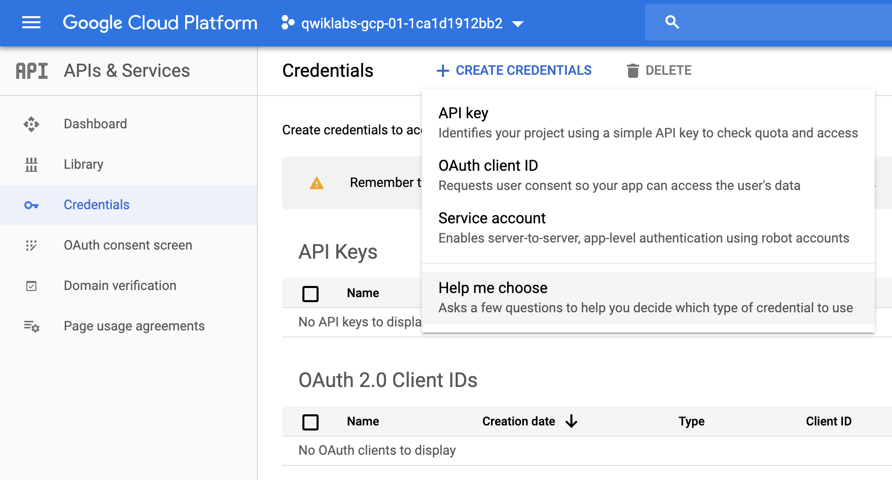

[Google API] 如何處理超過一分鐘語音檔 | Speech to Text API Headle Over 1min File
Status: Completed
▌目的
- 一般使用Speech-to-Text API，如果遇到超過一分鐘檔案，如果遇到以下的錯誤訊息
Quota exceeded for quota metric ‘Requests’ and limit ‘Requests per minute，因為你使用到的是Transcribing short audio files - 在選單中Transcribing long audio 可以協助你解決I
longrunningrecognize檔案的處 - 完整的
Endpointhttps://speech.googleapis.com/v1/speech:longrunningrecognize
▌1. 語音轉換文字 API | Cloud Speech-to-Text API
1. 建立可以授信的 API key
- 建立一個憑證Credentials，一般信認的三式有種API Key、OAuth、Service Account
- 本次使用的API Key

獲取Token Key

完整Token 資訊
限制
你的Token，可以只針對某些特定的application、HTTP、IP作使用
為了待會使用curl，需要做驗證
可以先將token設成一個變數，如此作法也較安全
不會因為明碼直接外洩
2. 語音檔準備
- 首先找一個超過1分鐘的語音檔案
- 先存放在
Cloud Storage裡面滿並且將權限打開
2. cURL: 呼叫 Speech API
curl 參數說明
-s: –silent 安靜模式，不要顯示任何progress在console，即使有err也是-X POST: -X –request- 一般搭配 [GET|POST|PUT|DELETE|PATCH]
使用指定的 http method 來發出 http request
- 一般搭配 [GET|POST|PUT|DELETE|PATCH]
-H: 設定 request 裡所攜帶的 header—data-binary: 攜帶 HTTP POST Data-audioChannelCount: 2 聲音檔是雙聲道來源encoding也就是語音的格式：flac是一種語音格式檔languageCode語言：en-us(預式都是英文)，我把它調整為zh-TW@request.json: 用來夾檔?key=${API_KEY}: 用來餵token> result.json: 內容輸出到指定檔案
1 | curl -X POST \ |
2 | -H "Content-Type: application/json; charset=utf-8" \ |
3 | --data "{ |
4 | 'config': { |
5 | 'encoding':'FLAC', |
6 | 'audioChannelCount': '2', |
7 | 'languageCode': 'zh-TW' |
8 | }, |
9 | 'audio':{ |
10 | 'uri':'gs://xxx-voices/0409-xxxx-458.flac' |
11 | } |
12 | }" "https://speech.googleapis.com/v1/speech:longrunningrecognize?key=${API_KEY}" |
3. 輸出結果
curl -X POST
- 因為較長的語音檔處理需要一點時間，所以會給你一組ID
- 透過curl [2]方式取回轉換的文字檔
1 | curl -X POST \ |
2 | -H "Content-Type: application/json; charset=utf-8" \ |
3 | --data "{ |
4 | 'config': { |
5 | 'encoding':'FLAC', |
6 | 'audioChannelCount': '2', |
7 | 'languageCode': 'zh-TW' |
8 | }, |
9 | 'audio':{ |
10 | 'uri':'gs://xxx-voices/0409-xxxx-458.flac' |
11 | } |
12 | }" "https://speech.googleapis.com/v1/speech:longrunningrecognize?key=${API_KEY}" > result1.json |
13 | % Total % Received % Xferd Average Speed Time Time Time Current |
14 | Dload Upload Total Spent Left Speed |
15 | 100 206 0 36 100 170 25 119 0:00:01 0:00:01 --:--:-- 144 |
- 產出的name ID取回text:
1947xxxxxxxxx006
1 | # joe.huang @ joehuangs-MacBook-Pro in ~ on git:master x [23:59:15] |
2 | $ cat result1.json |
3 | { |
4 | "name": "1947xxxxxxxxx006" |
5 | } |
curl -H
- 使用產出的name ID取回text
- 成功將七分鐘的flac語音轉換成text文字，API會自動分段文字
- 當然後續還是有很多優化的工作要做
1 | # joe.huang @ joehuangs-MacBook-Pro in ~ on git:master x [0:12:24] |
2 | $ curl -H "Content-Type: application/json; charset=utf-8" \ |
3 | "https://speech.googleapis.com/v1/operations/1947xxxxxxxxxx006?key=${API_KEY}" |